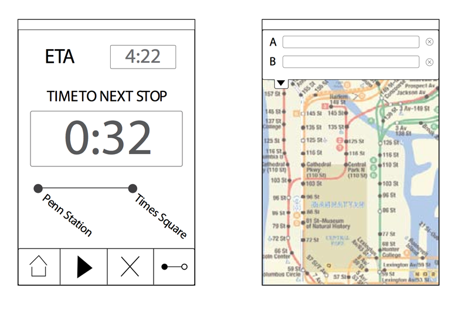
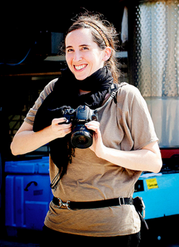

Develop an application for mobile workers who use mass transit to commute to multiple job sites.
We spent time thinking about different problems New Yorkers face with their daily commute on the subway, and thought about the different ways New Yorkers like to spend their time during their routine commutes. We realized that commuters try to spend their time in the subway as efficnetly as possible, by reading, listening to music, sleeping, etc. Very rarely do we see New Yorkers doing nothing on long subway rides.
This led to the birth of Subway Siesta. We know that people riding public transportation in New York City need to pay attention to upcoming stops so they do not miss their destination. Frequent users of public transportation would like to use their travel time productively - Subway Siesta allows users to do just that.
Basic Interaction Design
Date: January - Febrary 2011
Sketching, Personas,
Information architechture design
We spent time thinking about different problems New Yorkers face with their daily commute on the subway, and thought about the different ways New Yorkers like to spend their time during their routine commutes. We realized that commuters try to spend their time in the subway as efficnetly as possible, by reading, listening to music, sleeping, etc. Very rarely do we see New Yorkers doing nothing on long subway rides.
Knowing this, we came up with our hunt statement for the project:
People who ride public transportation in New York City need to pay attention to upcoming stops so that they do not miss their destination. Frequent users of public transportation would like to use their travel time productively.
We began to storyboard how users would complete essential tasks in our mobile app. Here, we show how a user would select the tranfers they choose to take.

We then went on to create basic wireframes to show what the app would look like while the user was in the middle of their journey.
This project also had us focus on creating a solid persona to work with during our design process. Meet Rachel Wells, our 27 year old designer living in New York City.

More about Subway Siesta can be found on our
Process Book website.